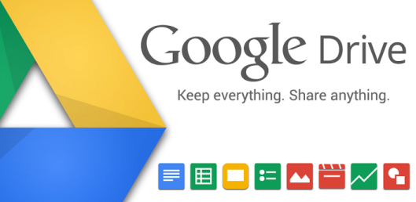
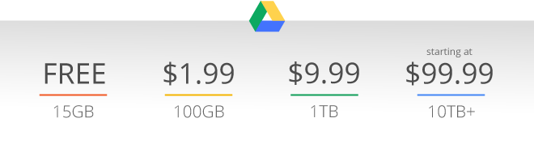
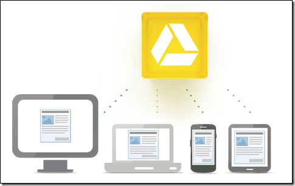
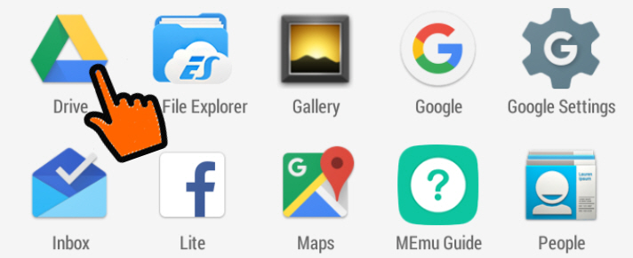
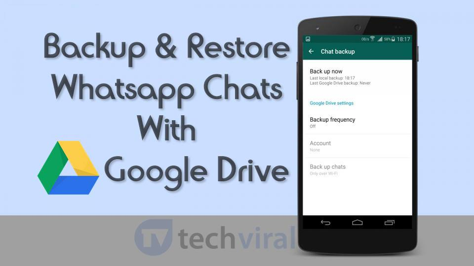
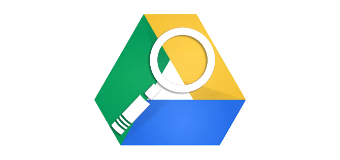

Google Drive is a file storage and synchronization benefit created by Google.
It enables clients to store documents on their servers, synchronize records crosswise over gadgets, and offer records. Records made and altered through the workplace suite are spared in Google Drive. The site and Android application offer a Backups segment to perceive what Android gadgets have information upheld up to the administration.To visit google drive, click here
click the imageLet's discuss the features of Google Drive
Storage:- Google Drive offer clients 15 gigabytes of free storage, with 100 gigabytes, 1 terabyte, 2 terabytes, 10 terabytes, 20 terabytes, and 30 terabytes offered through discretionary paid plans. Documents transferred can be up to 5 terabytes in size. In 2018, the paid plans were re-branded as Google One to emphasize their application beyond Google Drive, along with the addition of a $2.99/month plan for 200 GB, and increasing the $9.99 plan to 2 TB at no additional charge. In most cases during these changes, users could continue with their existing plans as long as they kept their accounts active and did not make any adjustments to the plan. However, if the account lapsed for any reason, users had to choose from current plans.
Sharing>:- Google Drive joins an arrangement of document sharing in which the maker of a record or organizer is, as a matter of course, its owner. The owner can direct general society visibility of the record or organizer and ownership is transferable. Documents or organizers can be shared secretly with specific clients having a Google account, utilizing their @gmail.com email addresses.Files and folders can also be made "public on the web", which means that they can be indexed by search engines and thus can be found and accessed by anyone. The owner may also set an access level for regulating permissions.
Quick access:- Quick access is a very useful instrument in Google drive as it gives users evry kind of access in the system in just a second. Users can arrange thier desired icons in home section. Presented in the Android application in September 2016, Quick Access utilizes machine figuring out how to "cleverly predict the records you require before you have even composed anything". The component was declared to be extended to iOS and the web in March 2017, however the site interface got the element in May.
Backups:- In December 2016, Google updated the Android application and site with a "Backups" area, posting the Android gadget and application backups saved to Drive. The area gives clients a chance to perceive what backups are put away and erase backups. In June 2017, Google reported that another application, "Backup and Sync", would have the capacity to synchronize any organizer on the client's PC to Google. This vital application was actually released on 12 July 2017.
Search:-  Search items can be limited by record type, ownership, visibility, and the open-with application. Clients can look for pictures by depicting or naming what is in them. For instance, a scan for "House" restores all the photographs of houses, and in addition any content records about houses. In February 2017, Google integrated Drive and the Google Search app on Android, letting users search for keywords, switch to an "In Apps" tab, and see any relevant Drive files.